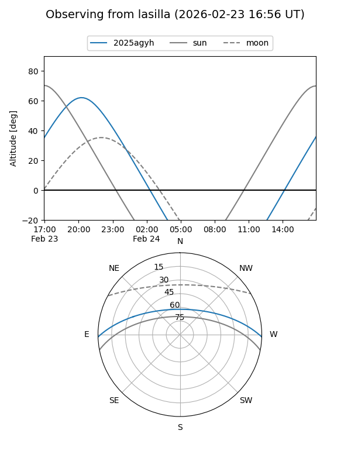
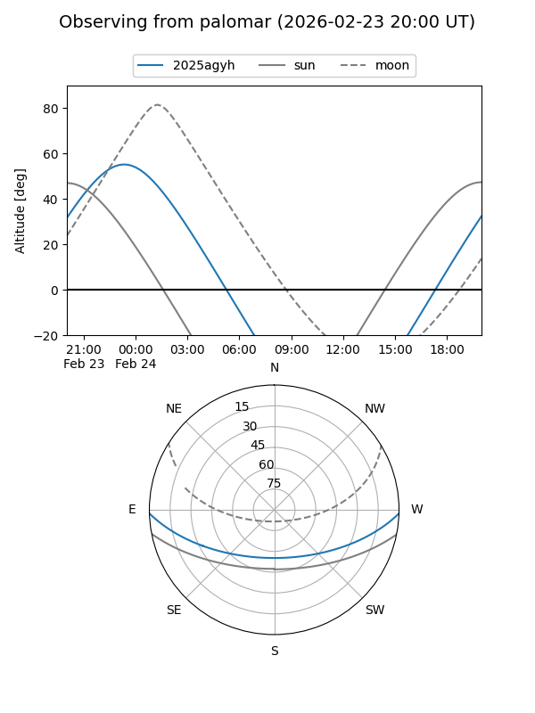
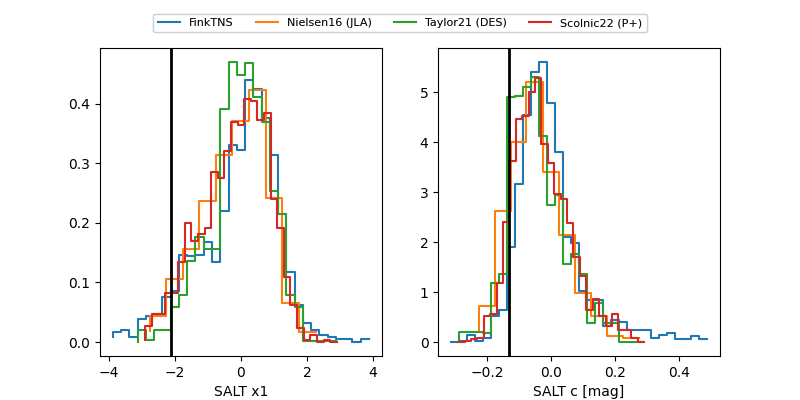

2025agyh
Target 2025agyh at 2025-12-21 05:40
Aliases and brokers:
FINK: fink-portal.org/ZTF25achediw
Lasair: lasair-ztf.lsst.ac.uk/objects/ZTF25achediw
ALeRCE: alerce.online/object/ZTF25achediw
TNS: wis-tns.org/object/2025agyh
YSE: ziggy.ucolick.org/yse/transient_detail/2025agyh
alt names
ZTF25achediw (ztf,fink_ztf)
2025agyh (tns,yse)
Coordinates:
equatorial (ra, dec) = 26.5880,-1.54606
equatorial (HMS+DMS) = 01:46:21.12,-01:32:45.83
galactic (l, b) = (152.4630,-61.22896)
Flags:
Photometry:
last ztfg=19.45, ztfr=19.48
2 ztfg, 3 ztfr detections
Lightcurve

Visibility


Additional plots
